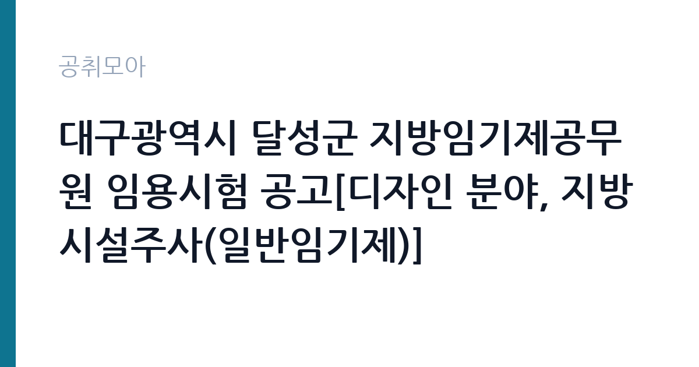

[지자체] 대구광역시 달성군 지방임기제공무원 임용시험 공고[디자인 분야, 지방시설주사(일반임기제)]
대구광역시 달성군 · 대구 · 마감 2026-10-29 (D-11) · 출처 나라일터

한눈에 보는 모집 조건
| 기관 | 대구광역시 달성군 |
|---|---|
| 공고명 | 대구광역시 달성군 지방임기제공무원 임용시험 공고[디자인 분야, 지방시설주사(일반임기제)] |
| 고용형태 | 임기제 |
| 근무지 | 대구 |
| 게시일 | 2026-10-19 |
| 마감일 | 2026-10-29 (D-11) |
지원자격, 이렇게 읽으세요
- 지방시설주사(일반임기제) 1명
- 접수 ~2026-10-29 마감
- 세부 조건은 원문 공고문 확인
응시 자격의 핵심은 디자인 분야 학위와 실무 경력입니다. 공고문에는 지방시설주사(일반임기제) 상당 직급으로 표시되어 있고, 세부 자격 요건은 첨부된 임용시험 공고문에 학력·경력 기준으로 나뉘어 적혀 있습니다. 일반임기제는 계약직 신분이지만 직급 상당의 대우를 받고, 근무실적에 따라 계약을 연장할 수 있습니다. 응시 연령과 결격사유는 지방공무원법 기준이 적용되므로, 공고문의 응시자격 표와 결격사유 조항을 함께 확인해야 합니다. 경력 증명이 서류전형의 점수에 직결되므로 재직증명서와 경력기술서를 미리 준비하는 편이 안전합니다.
이 공고의 포인트
이 공고의 가장 큰 특징은 접수 창구가 좁다는 점입니다. 사흘 동안 방문이나 등기우편만 인정되므로, 마감일 우체국 사정에 따라 접수가 무효가 될 위험이 있습니다. 반대로 생각하면 경쟁자가 몰리지 않는 구간이기도 합니다. 두 번째 특징은 근무지가 달성군청 도시정책과라는 점입니다. 달성군은 도시환경(경관)개선사업, 야간경관개선사업, 주민제안사업, 옥외광고물 지정게시대 관리, 공공디자인 진흥위원회 운영을 같은 팀에서 맡고 있어, 디자인 직무가 행정 절차와 붙어 있는 현장입니다. 순수 그래픽 작업보다 사업 기획과 협의가 중심이 됩니다.
전형은 어떻게 진행되나
전형은 1차 서류심사, 2차 면접심사 순으로 진행됩니다. 서류심사에서 응시자격 충족 여부와 경력의 질을 보고, 면접에서 직무 수행 능력과 공직 적합성을 확인합니다. 최종합격자는 임용 예정일인 2026년 12월 중에 임용됩니다. 담당 부서는 달성군청 총무과이며, 전화 053-668-2234로 문의할 수 있습니다. 접수 기간이 사흘이므로 서류 준비는 공고 확인 즉시 시작해야 하며, 우편 접수는 마감일 도착분만 인정되는지 공고문 문구를 반드시 확인해야 합니다.
원문에서 확인한 전형 방식
대구광역시 달성군 지방임기제공무원 임용시험을 다음과 같이 공고합니다. ○ 채용분야 및 인원 : 디자인 분야, 지방시설주사(일반임기제) 1명 ○ 접수기간 : 2026. 10. 27.(화) ~ 10. 29.(목) / 3일간 ○ 응시방법 : 방문접수 또는 우편접수(등기) ○ 임용예정일자 : 2026. 12월 중 ○ 채용기간 : 임용일로부터 2년 ○ 담당부서(연락처) : 대구광역시 달성군청 총무과(전화 053-668-2234)
이런 분께 추천해요
- 경관디자인·공공디자인 사업 실무 경력이 있는 디자이너
- 지자체 협의와 행정 절차를 함께 다뤄본 경험이 있는 지원자
- 2년 계약직이라는 조건을 감수하고 공공 디자인 포트폴리오를 쌓으려는 분
지원 전 체크리스트
- 응시자격의 학력·경력 기준을 공고문 표에서 한 줄씩 대조했는가
- 경력증명서와 재직증명서를 마감 전에 발급받을 수 있는가
- 방문 접수 장소와 등기우편 도착 기준 시각을 확인했는가
- 지방공무원법상 결격사유에 해당하지 않는가
모집 일정과 제출 타이밍
접수는 2026년 10월 27일부터 29일까지 사흘간 진행되고, 임용은 2026년 12월 중입니다. 서류전형과 면접 일정은 공고문에 별도로 명시되므로 접수 후 개별 안내를 확인해야 합니다. 접수 시작일이 화요일이고 마감이 목요일이므로, 주말을 넘겨 준비하면 시간이 남지 않습니다. 등기우편으로 보낼 경우 마감일 이전 도달을 목표로 최소 이틀의 여유를 두는 편이 안전합니다.
직무 이해하기: 지자체
달성군 도시정책과의 디자인 업무는 도시 경관을 관리하는 행정 디자인입니다. 도시환경 개선사업과 야간경관 개선사업의 계획과 시행을 지원하고, 주민제안사업을 디자인 관점에서 검토합니다. 옥외광고물과 현수막 지정게시대를 관리하고, 공공디자인 진흥위원회와 경관위원회 운영을 맡습니다. 결과물이 조형물이나 간판 같은 물리적 시설로 나타나기 때문에, 도면과 시방서를 읽고 업체와 협의할 수 있는 실무 감각이 필요합니다.
자기소개서 작성 팁
자기소개서는 디자인 결과물보다 의사결정 과정을 보여주는 방식이 유리합니다. 어떤 지역의 경관 문제를 어떤 기준으로 진단했고, 예산과 이해관계자 제약 속에서 어떤 대안을 골랐는지를 사례 하나로 압축해 서술하세요. 달성군은 대구 외곽의 도농복합 지역으로, 신도시와 농촌 마을이 함께 있습니다. 두 공간의 디자인 수요가 다르다는 점을 이해하고 있다는 신호를 주면 직무 이해도가 드러납니다. 임기제 2년이라는 기간 동안 무엇을 남기겠다는 목표도 한 문단 넣으세요.
면접 준비 포인트
면접에서는 경관·공공디자인 관련 법령과 절차를 아는지 확인할 가능성이 큽니다. 옥외광고물 관리, 경관위원회 심의, 공공디자인 진흥위원회의 역할을 설명할 수 있어야 합니다. 또 하나 자주 나오는 질문은 민원 대응입니다. 현수막 지정게시대나 간판 민원처럼 이해관계가 갈리는 사안에서 어떤 기준으로 판단할지 답변을 준비하세요. 포트폴리오는 지참 가능 여부를 공고문에서 확인하고, 허용된다면 한 장 요약본을 만드는 편이 좋습니다.
급여·근무조건 읽는 법
임기제공무원의 보수는 지방공무원보수규정에 따라 연봉제로 지급되는 것이 원칙이며, 직급 상당과 경력에 따라 금액이 달라집니다. 이 공고문에는 보수 금액이 요약되어 있지 않으므로, 정확한 연봉은 원문 공고문의 보수 안내 또는 달성군청 총무과(053-668-2234) 문의로 확인해야 합니다. 근무시간은 지방공무원 복무규정을 따르며, 임기제라도 4대보험과 퇴직급여 등은 관련 법령에 따라 적용됩니다. 계약 기간은 2년이고 근무실적에 따라 연장이 가능하다는 점이 일반 계약직과 다른 부분입니다.
자주 묻는 질문
- 임기제 공무원도 정규직인가요
임기제공무원은 계약 기간이 정해진 공무원 신분입니다. 이 공고는 임용일로부터 2년이며, 근무실적에 따라 계약 연장이 가능하지만 무기계약 전환을 전제로 하지는 않습니다. - 디자인 전공이 아니어도 지원할 수 있나요
학력·전공 요건은 공고문에 따릅니다. 관련 학위 또는 이에 준하는 경력 요건이 제시되므로, 원문 공고문의 응시자격 표를 확인해야 합니다. - 접수를 우편으로만 할 수 있나요
방문접수와 등기우편 접수가 모두 가능하다고 공고되어 있습니다. 일반 우편은 인정되지 않으므로 등기로 보내고 배송 조회를 남기세요.
함께 보면 좋은 공고
[지자체] 2026년도 제1회 옥천군의회 일반임기제공무원(정책지원관) 채용 공고 — 마감 2026-11-03[지자체] 2026년 제4회 인천광역시경제자유구역청 지방임기제공무원 채용시험 시행계획 공고 — 마감 2026-10-27[지자체] 보령시 직장운동경기부(유도팀) 지도자(감독) 공개 채용 공고 — 마감 2026-10-29출처: 나라일터 공개정보를 바탕으로 공취모아가 정리한 안내글입니다. 모집 조건·일정은 변경될 수 있으니 지원 전 반드시 원문 공고문을 확인하세요. 본 글은 정보 제공용이며 합격을 보장하지 않습니다.